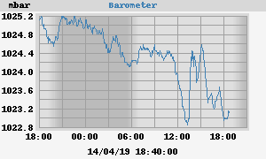

Barometer
24h barometer

Today's min: 1022.9 mbar at 13:11:00
Today's max: 1025.1 mbar at 00:00:01
7-day barometer
This week's min: 1008.7 mbar at 03:35:01 (Monday)
This week's max: 1026.9 mbar at 07:53:00 (Saturday)
weewx v 3.8.2